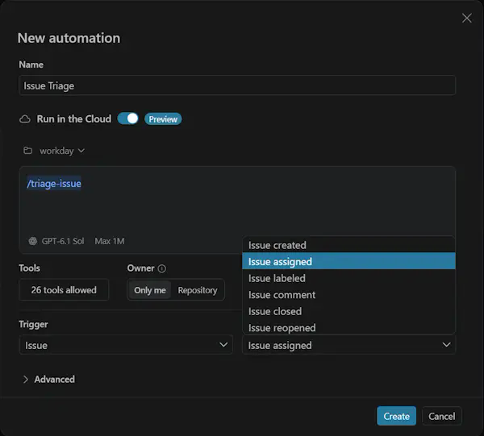

Visual Studio Code
Paused
Agents Window
Orchestrate a team of agents
Run tasks in parallel across your repositories, follow their progress, and review the changes in one place.
- Each agent works in its own worktree, so changes don't collide
- Manage agents across all your workspaces and environments
- Switch to the editor and back without stopping a session

Automations
Put recurring work on a schedule
Save a prompt once and let an agent run it for you: summarize repository changes or triage issues without starting each session by hand.
- In the app: runs on your machine with your tools, hourly, daily, weekly, or by cron
- On GitHub: runs in the cloud, even when your computer is off Preview
- Cloud automations can also react to issue and pull request events


Integrated Browser
A browser you and your agent share
Preview your app inside VS Code and share the page with your agent, so it sees what you see.
- Comment on a page element to give the agent precise feedback
- The agent runs the app, clicks through it, and fixes what it finds
- Browser tools are built in, with no MCP server to set up

Jump to a slide
Click any feature · press ` to toggle · Esc to close